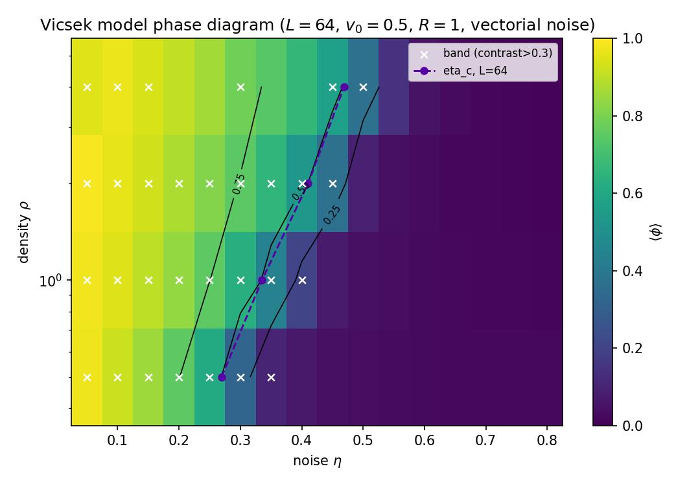
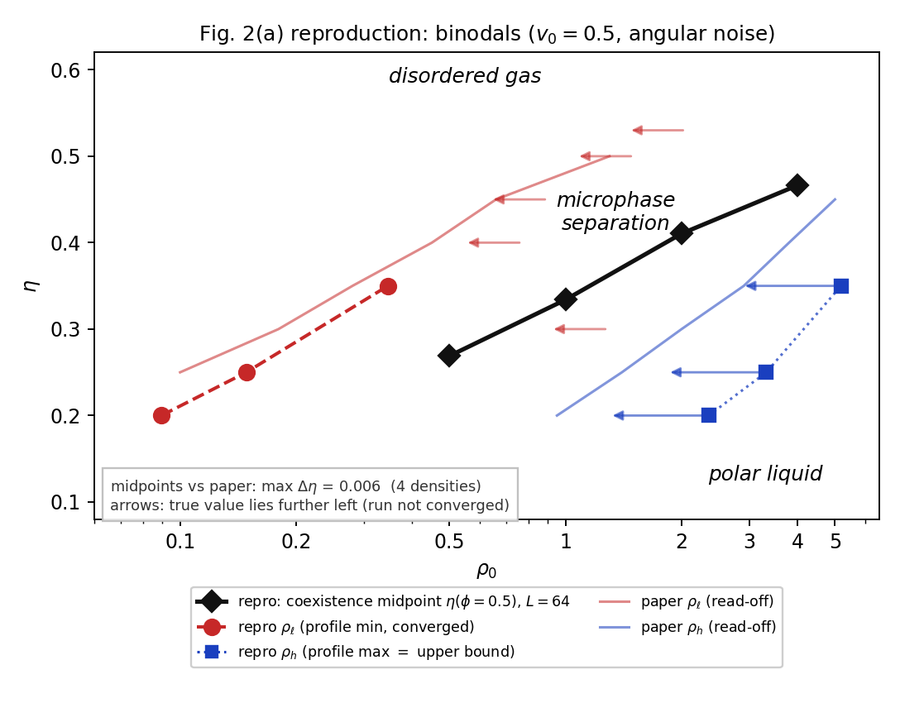
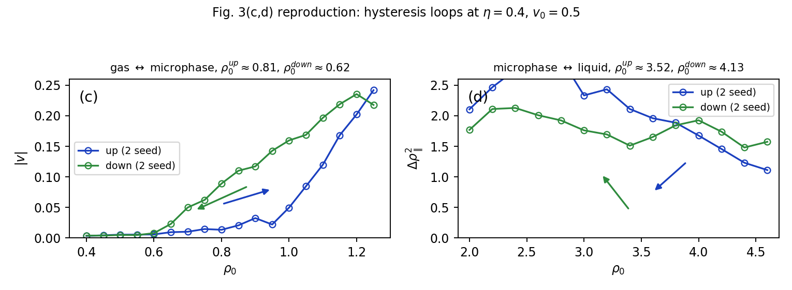
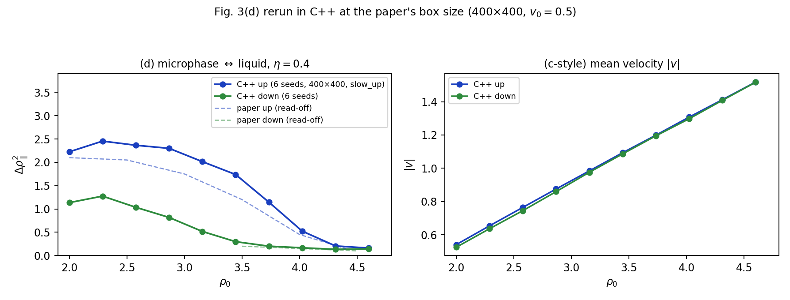
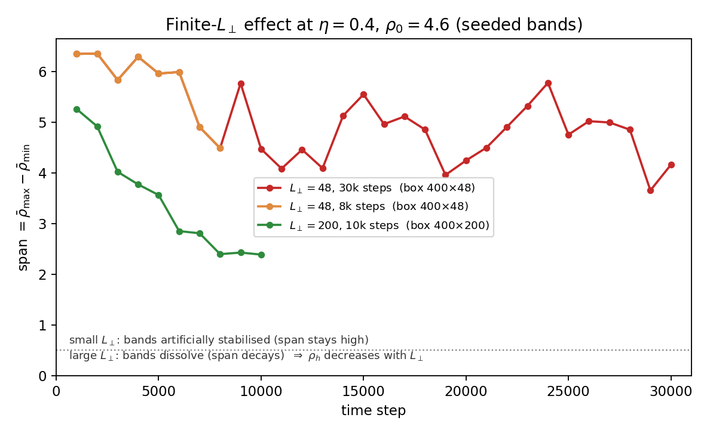
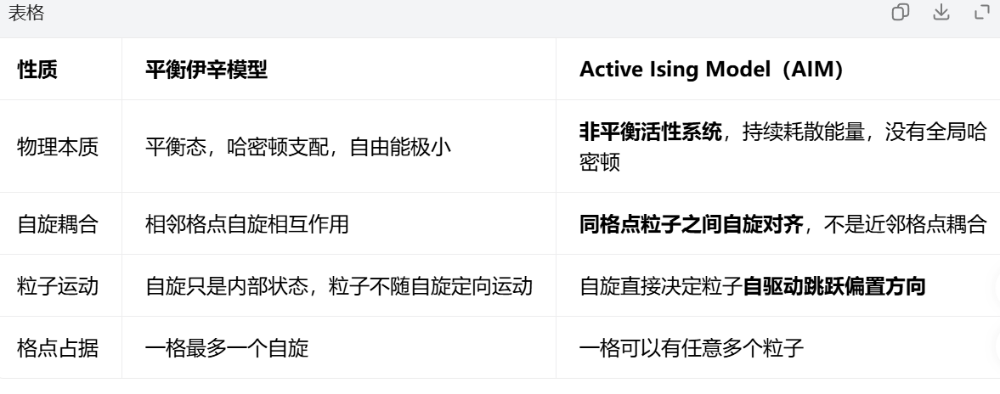
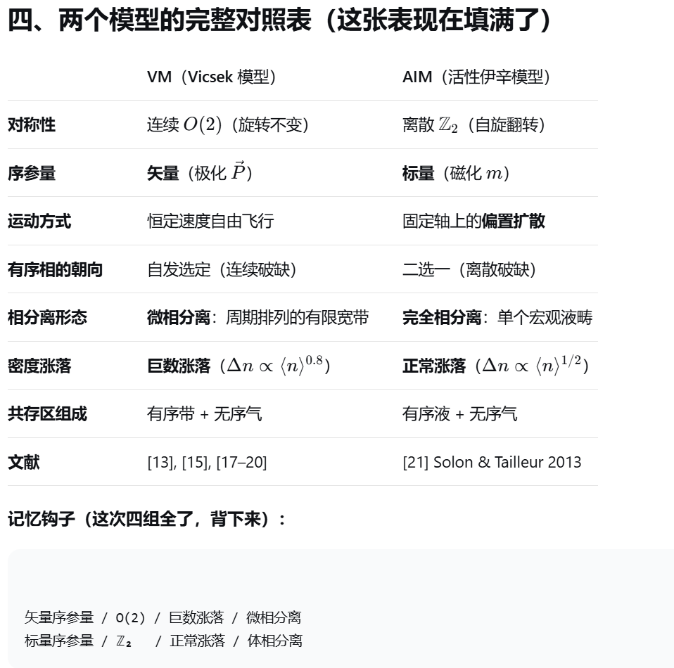
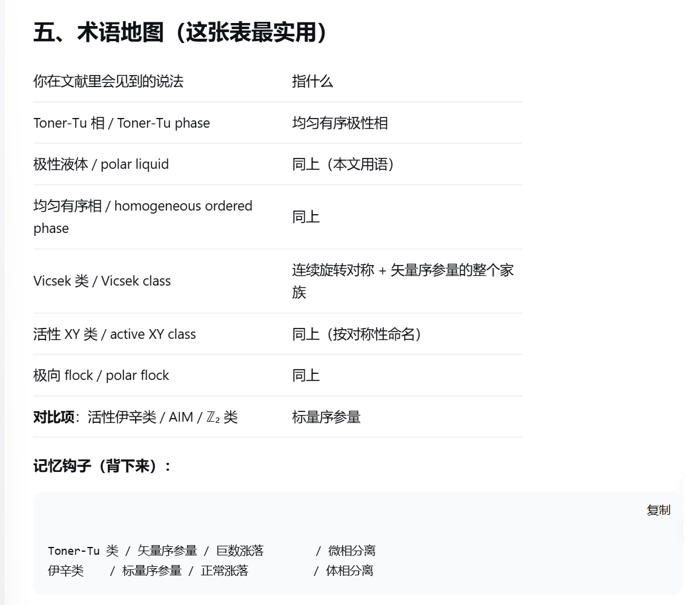
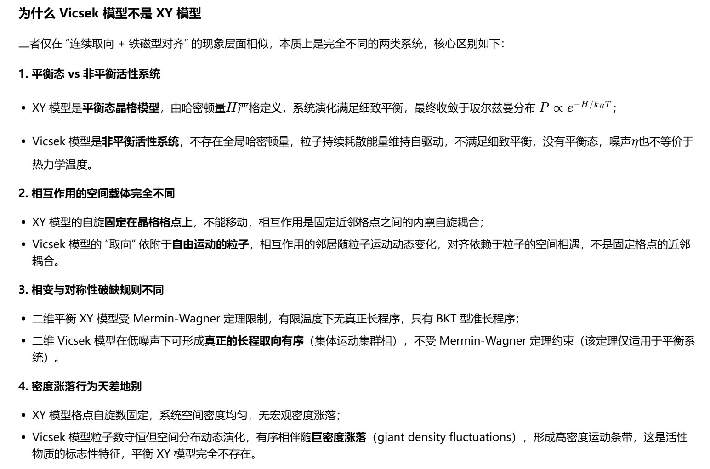

Vicsek 模型的相分离复现
研究项目 · 进行中
用自己写的代码，把 Solon、Chaté 与 Tailleur 在 PRL 114, 068101 (2015) 里的相分离图像重算一遍。
下面是模型、代码结构、复现结果，以及哪些地方还没有做到。
这个项目在做什么
那篇 PRL 的核心主张是：Vicsek 模型的”有序—无序转变”不是普通的连续相变，而是一级相变 + 微相分离。均匀有序相（Toner-Tu 相 / 极性液体）与无序气相之间隔着一段共存区，共存区里系统自发排成周期排列的有限宽”带”。
我把复现目标具体到三张图：
| 论文 panel | 内容 | 我的做法 |
|---|---|---|
| Fig 2(a) | binodal 相图：\(\rho_\ell(\eta)\)（气体侧）与 \(\rho_h(\eta)\)（液体侧） | 一次共存区长程运行，取带剖面的谷值与峰值 |
| Fig 3(c) | \(\eta=0.4\) 下气体 ↔︎ 微相分离的滞后回线 | 密度 ramp，400×100，2 seeds |
| Fig 3(d) | \(\eta=0.4\) 下微相分离 ↔︎ 极性液体的滞后回线 | 密度 ramp，400×400（C++），6 seeds |
为什么重写代码：这篇论文的相图对噪声约定、初态协议、盒子纵横比都很敏感。只有代码是自己写的，而且有两套独立实现互相对齐，才能确定复现的是论文里那条转变线，而不是一条形状相近的线。
模型
角噪声（scalar / angular noise）Vicsek 模型，对应论文式 (1)。所有粒子用 \(t\) 时刻的信息平行更新：
\[ \theta_i(t+1)=\mathrm{Arg}\Big(\sum_{j\in S_i}\mathbf{v}_j(t)\Big)+\eta\,\xi_i, \qquad \mathbf{x}_i(t+1)=\mathbf{x}_i(t)+v_0\,\mathbf{e}_i(t+1)\pmod L \tag{1}\]
- \(S_i\)：与粒子 \(i\) 距离 \(\le R\) 的所有粒子（含自身），周期边界取最小镜像约定；
- \(\xi_i\)：\([-\pi,\pi]\) 上均匀分布的随机角，噪声幅值为 \(\eta\pi\)，\(\eta\in[0,1]\)；
- 标准参数：\(v_0=0.5\)、\(R=1\)、\(\Delta t=1\)；初态为随机位置 + 随机取向，也就是”从无序出发”。
先把术语说清楚：角噪声还是矢量噪声
同一篇文献里 “vectorial noise” 和 “angular noise” 经常被混着写，但它们是两个不同的模型。按 Ginelli & Chaté, EPJ ST 225, 2099 (2016) 的定义：
- scalar / angular noise（其式 (2) 即本页式1）：随机角 \(\eta\xi_i\) 加在邻居速度和的辐角上；
- vectorial noise（其式 (6)）：随机矢量在归一化之前加到邻居速度和上，幅值正比于邻居数。
两者渐近性质相同，有限尺寸行为有差异，定量对照文献数值时不能混用。Solon–Chaté–Tailleur (2015) 的 Fig 2 / Fig 3 用的是角噪声版本，本项目的所有实现都与它对齐——这也是为什么下面的 \(\eta\) 刻度可以和论文直接比。
代码结构：两代实现 + 一条并行分支
| 文件 | 属于 | 做什么 |
|---|---|---|
vicsek.py |
第一代（方形盒） | 模型核心：精确邻域搜索、观测量、单点 CLI、自检 |
scan.py |
第一代 | 并行网格扫描（多进程/线程、断点续跑、--quick / --dense） |
analyze.py |
第一代 | 相图绘图 + \(\eta_c\) 提取 |
vicsek_rect.py |
第二代（矩形盒） | 加上任意 \(L_\parallel\times L_\perp\) 与 ramp_run 密度 ramp 协议 |
vicsek_ramp.cpp |
第二代（C++ 加速） | 与 vicsek_rect.ramp_run 同一物理、同一协议的编译实现 |
campaign.py |
复现流水线 | 批量跑 Fig 2(a) / Fig 3(c,d) 的任务 |
plot_cpp_fig3d.py |
复现流水线 | 出 Fig 3(d) 的 C++ 对照图 |
这条线是两代：方形盒的相图扫描 → 矩形盒加 ramp 协议 → 把第二代编译成 C++ 去跑论文规格的 400×400。C++ 版不是新模型，它和 Python 版在同一批用例上 \(\varphi\) 相差 0.2%–0.9%。
另外还有一条并行分支：sim/ 目录里有一套从头独立写的带测量工具（vicsek_bands.cpp，Python/scipy 版 205 ms/步已弃用）。它只做一件事——测共存区里一条带的宽度与密度，回答”噪声降低时一条带的质量为什么变小”。它不是第三代，而是一套独立写的第二实现，用来对主线的结论做交叉验证：两套代码在 \(\eta=0.4\)、\(\rho=1.93\)、800×100 下给出 \(\varphi\) 差 0.7%、\(n_b\) 同为 6。
复现结果
相图中的点对上了
用 \(L=64\) 方形盒、随机初态扫描每个密度的 \(\varphi=0.5\) 中点，与论文相图两条曲线的窗口中点对比：
| \(\rho_0\) | 我的 \(\eta(\varphi=0.5)\) | 论文窗口 | 论文中点 |
|---|---|---|---|
| 0.5 | 0.270 | (0.12, 0.43) | 0.275 |
| 1.0 | 0.335 | (0.21, 0.47) | 0.340 |
| 2.0 | 0.410 | (0.30, 0.52) | 0.410 |
| 4.0 | 0.470 | (0.41, 0.53) | 0.470 |
四个密度全部吻合到 0.01 以内。这条对齐同时确认了三件事：模型写对了、噪声约定选对了（角噪声而非矢量噪声）、\(\eta\) 的标度可以直接和论文比较。

与论文 Fig 2(a) 的对照

气体侧 \(\rho_\ell(\eta)\) 在 \(\eta\le0.35\) 收敛得很好（\(\eta=0.20\)：0.089；\(\eta=0.25\)：0.148；\(\eta=0.35\)：0.31–0.44）。\(\eta\ge0.4\) 的点系统性偏高 20–40%，原因是气体背景在给定步数内还没有完全稀释：趋势对，数值没到平衡。具体原因列在下面「复现到什么程度」一节。
滞后回线：气体 ↔︎ 微相分离（Fig 3(c)）
\(\eta=0.4\)，400×100，2 seeds：
| 量 | 复现 | 论文（400×400，100 runs） |
|---|---|---|
| 上行支成核 \(\rho_0\) | 0.81–0.95 | 0.90 |
| 下行支消失 \(\rho_0\) | 0.62–0.70 | 0.75 |
| \(\lvert v\rvert\)（\(\rho_0=1.25\)） | 0.24 | 0.23 |
两支的相对位置、弯曲形状、右端汇合都与论文截图一致；滞后略宽，来自 seeds 数与 \(L_\perp\) 的差异。

滞后回线：微相分离 ↔︎ 极性液体（Fig 3(d)）
这一张最初是失败的：在 400×48 的窄盒子里，上行支无论如何都不崩塌，看起来像”\(\rho_h>5.5\)“。换成论文规格 400×400、每点 8000 步、上行用 3 条带种子、6 seeds 之后：
| \(\rho_0\) | 上行支 \(\Delta\rho_\parallel^2\) | 下行支 | 论文读数 |
|---|---|---|---|
| 2.00 | \(2.23\pm0.04\) | 1.14 | ~2.1 |
| 2.87 | \(2.30\pm0.11\) | 0.82 | ~2.1 |
| 3.44 | \(1.74\pm0.17\) | 0.30 | ~1.9 |
| 4.02 | \(0.52\pm0.15\) | 0.17 | ~1.2 |
| 4.60 | \(0.16\pm0.05\) | 0.14 | ~0.15 |
上行支平台 2.2–2.45（论文 2.1）、高密度端 0.16（论文 0.15）、下行支高密度侧 0.13–0.20（论文 ~0.15）——高密度端和平台都对上了。仍然存在的差异：我的崩塌区在 3.7–4.0，比论文（4.0–4.2）偏早，而且崩塌过程比论文更平缓（论文是在 4.0 附近陡降）。

液体侧 binodal：为什么不能用剖面峰值
最开始的做法是错的：把带剖面的峰值当作 \(\rho_h\)。小 \(L_\perp\) 盒子里带被挤压，峰值会系统性偏高约一倍（\(\eta=0.2\) 给 2.35，论文约 0.95；\(\eta=0.35\) 给 5.19，论文约 2.9）。
换用带稳定性判据、并做 \(L_\perp\) 扫描后，证据链才清楚：
| 盒子 | span 演化（30000 步内） | 判定 |
|---|---|---|
| 400×48 | 6.35 → 4.16，无趋势（均值 5.03） | 不溶解——窄盒子人为稳定带 |
| 400×200 | 5.26 → 3.56 → 2.39 单调衰减 | 正在溶解 |
| 400×400（C++ ramp） | 下行支 \(\rho\ge3.7\) 时 \(\Delta\rho_\parallel^2=0.14\)–0.18 | 已均匀 |

一个教训：协议本身是结果的一部分
同一个状态点（\(\eta=0.4\)、\(\rho_0=2.87\)），三种协议给出三个差别很大的 \(\Delta\rho_\parallel^2\)：
| 上行支协议 | \(\rho_0=2.87\) 处的 \(\Delta\rho_\parallel^2\) | 现象 |
|---|---|---|
| 每点 4000 步、播 2 条带 | 3.56 | 带被压缩（还没弛豫），偏高 |
| 每点 8000 步、播 3 条带 | 2.30 | 与论文的 2.1 吻合 |
| 单点充分弛豫（3000+ 步自由演化） | 1.24 | 带展宽、气体密度升到 1.65，偏低 |
太快 → 带被压缩、偏高；太慢 → 带展宽、偏低；论文的 2.1 落在中间，对应”ramp 足够慢，让带数能随密度自己调整”。所以播种的带数应该按自然带数取：
\[ n_b=\frac{L_\parallel\,(\rho_0-\rho_{\rm gas})}{\mu} \tag{2}\]
否则带会被盒子挤住。论文自己也提醒过这一点。上面那个 \(\rho_h>5.5\) 的假象也是同一个原因：参数没错，是盒子太小。
复现到什么程度
已经站得住的：
- 相图中点：四个密度的 \(\eta(\varphi=0.5)\) 与论文窗口吻合到 0.01 以内；
- Fig 3(c)：跃变位置与幅度在 0.05–0.1 以内；
- Fig 3(d)：上行支平台、高密度端、下行支高密度侧都对上；
- 带态定量：\(\eta=0.40\)、\(\rho_0=1.93\)、800×100 下 \(\rho_{\rm gas}=0.622\)（论文 0.606，差 2.6%）、峰值 4.82（论文 \(\approx4.5\)）、\(n_b=6\)（论文 \(\approx6\)）；自洽检查 \(L_x(\rho_0-\rho_{\rm gas})/n_b=174.4\) 与实测的 \(m_b/L_\perp=174.4\) 完全一致；
- 三个相区、两条 binodal 的形状、带的共存机制、双向滞后——定性全部复现。
还没做到的：
| 现象 | 原因 | 需要什么 |
|---|---|---|
| \(\rho_\ell(\eta\ge0.4)\) 偏高 20–40% | 气体背景未完全稀释（共 9000–25000 步不够） | 瞬态 ×3–5 |
| Fig 3(d) 上行支崩塌偏平缓 | ramp 偏快 + \(L_\perp=48\) 稳定带 | 每点弛豫 ×5（约 4000 步）+ 更大 \(L_\perp\) |
| 下行支低密度端 1.1–1.3（论文 ~2.1） | 成核在给定步数内没有完全展开 | 更多步数 |
| 滞后宽度偏大 | 2 seeds（论文 100 runs） | 更多 seeds、更慢 ramp |
| Fig 2(a) 蓝线没有独立测量 | 需要更慢 ramp / 更大 \(L_\perp\) | 慢 ramp + 恢复 \(L_\perp\) |
根本约束：论文 Fig 3(c,d) 用 400×400 盒子 + 100 runs，我这边是 16 核、纯 NumPy（没有 GPU，也没装 numba）。把 400×400 跑到收敛大约要 17 小时一条 ramp，所以对 \(L_\perp\) 和步数做了缩减——这直接导致高密度支没有到平衡。上面每一条”还没做到”，原因都是算力，不是物理。
工程侧：从 516 ms/步 到 33.6 ms/步
要在论文规格盒子上跑，Python 就不够了。400×400（\(N=736\,000\)）时同规模 NumPy 约 5.5 s/步（候选对数 \(3.1\times10^7\)），一条 23k 步的 ramp 要 35 小时。C++ 版最终 33.6 ms/步（16 线程），约 160×，同一条 ramp 约 13 分钟。
| 优化 | 效果 |
|---|---|
SoA + float：位置与取向分开存，内存流量减半 |
基础 |
强制内联取整：nearbyintf / floorf 在热循环里退化为 libm 调用 |
12.8×（4 线程 744 → 58 ms/步） |
| 计数排序按单元重排：邻居循环从随机散布访存变成连续内存，可预取 | 与上项合计约 4.6×（16 线程 156 → 33.6 ms/步） |
| sin/cos 查表（4096 项 + 线性插值，误差约 \(10^{-7}\)） | 同上 |
std::thread 按粒子分块（每粒子只写自己的槽位，无竞争）+ OpenMP 处理 \(O(N)\) 循环 |
16 核近线性 |
| 邻居单元 LUT、每线程独立 xoshiro256 随机数 | 基础 |
两个值得记下来的坑：
- libm 调用：
std::nearbyintf/std::floorf没被内联时是真正的函数调用，内层每对候选粒子调 2 次，即 6600 万次/步——正好解释了实测的 1.03 s/步。 - 自己写的查表 bug：把
ang×NB/(2π)当作”圈数比例”之后又乘了一次NB，等效把噪声角放大 6.28 倍，任意 \(\eta>0\) 都变成随机旋转。发现它的线索很干净：\(\eta=0\) 的极限测试给出 \(\varphi=1.0000\) 且所有粒子指向 \(+x\)，这是”零邻居回退分支”的特征签名。
Python 那条线也踩了两个值得写的坑：
- 排序后”朝向 ↔︎ 位置”错配：一开始把状态存成 \(\theta\)，在单元计数排序之前算好 \((\cos\theta,\sin\theta)\)，排序之后却用新槽位去索引旧顺序的三角函数值 → 张冠李戴。改成直接以 \((\cos\theta,\sin\theta)\) 为状态量、scatter 时和位置一起搬运、永不重算，\(\varphi\) 立刻对上参考值。
- 初态的取向展宽是要害：随机位置 + 随机朝向跑 12000 步 → 塌成一个巨团（峰值 \(\rho\approx19\)）；按 6 条带密度播种但朝向随机 → 照样塌；只有”按 6 条带播种 + 朝向近似对齐（spread \(=0.1\pi\)）“才稳定成 6 条带。带的形成有明确的成核/弛豫门槛，这正好呼应论文里的”临界核”与 Fig 3(c) 的滞回环。
还有一条协议层面的：跨 \(\eta\) 比较时不能配平”过剩密度”，必须配平”液相比”（杠杆定则）：
\[ \varphi_{\rm liq}=\frac{\rho_0-\rho_\ell}{\rho_h-\rho_\ell}=\text{const} \tag{3}\]
用 \(\varphi_{\rm liq}=0.39\) 从相图反解出正确的取样密度（\(\eta=0.40\to\rho_0=1.92\)、\(\eta=0.35\to1.34\)、\(\eta=0.30\to0.91\)）。在这之前我按”\(\rho_0/\rho_h\) 差不多”取样，结果落在共存窗口之外——第一波样本整体作废。
背景：这个模型在文献地图里的位置
复现的过程也是补背景的过程。下面几张是我读文献时整理的对照表。




关键的一条：Vicsek 模型和 XY 模型只是”连续取向 + 铁磁对齐”这层现象相似，本质上是两类系统。XY 是平衡态晶格模型，受 Mermin–Wagner 定理约束；Vicsek 是非平衡活性系统，粒子自由飞行、邻居随运动而变，不受该定理约束，而且它的有序相伴随巨数密度涨落（\(\Delta n\propto\langle n\rangle^{0.8}\)）——形成高密度带正是这种涨落的表现，平衡 XY 模型里完全不存在。
也正因为如此，Vicsek 类模型（矢量序参量、\(O(2)\)、巨数涨落、微相分离）和对面的活性伊辛类 AIM（标量序参量、\(\mathbb{Z}_2\)、正常涨落、体相分离）在相分离形态上完全不同：前者是周期排列的有限宽带，后者是单个宏观液畴。
下一步
- 慢 ramp：每密度点 4000–6000 步（而不是 1200），\(\mathrm{d}\rho\) 减半，预估 8–12 小时/条；
- 恢复 \(L_\perp\)：至少 100，高密度端再考虑 200–400；
- 多 seeds：每条 ramp 5–10 个种子，消掉分支噪声；
- 补上带速 \(c\) 的独立测量（现在用的圆互相关够用但不够稳）；
- 可选加速：装 numba（Python 3.13 需 ≥0.61）把步进循环编译，预期再快 5–10 倍。
代码与文献
代码：本页对着的源码都在仓库的 projects/vicsek-model/code/ 下（vicsek.py、vicsek_rect.py、scan.py、analyze.py、vicsek_ramp.cpp、campaign.py、plot_cpp_fig3d.py），目录说明见同目录的 README.md。
文献：
- Solon, Chaté & Tailleur, From Phase to Microphase Separation in Flocking Models: The Essential Role of Nonequilibrium Fluctuations, PRL 114, 068101 (2015) —— 复现目标。
- Ginelli & Chaté, Relevance of metric-free interactions in flocking phenomena, EPJ ST 225, 2099 (2016) —— 角噪声 / 矢量噪声的术语定义出处。
论文全文与截图仅用于本地阅读与对照，不在本站转载。